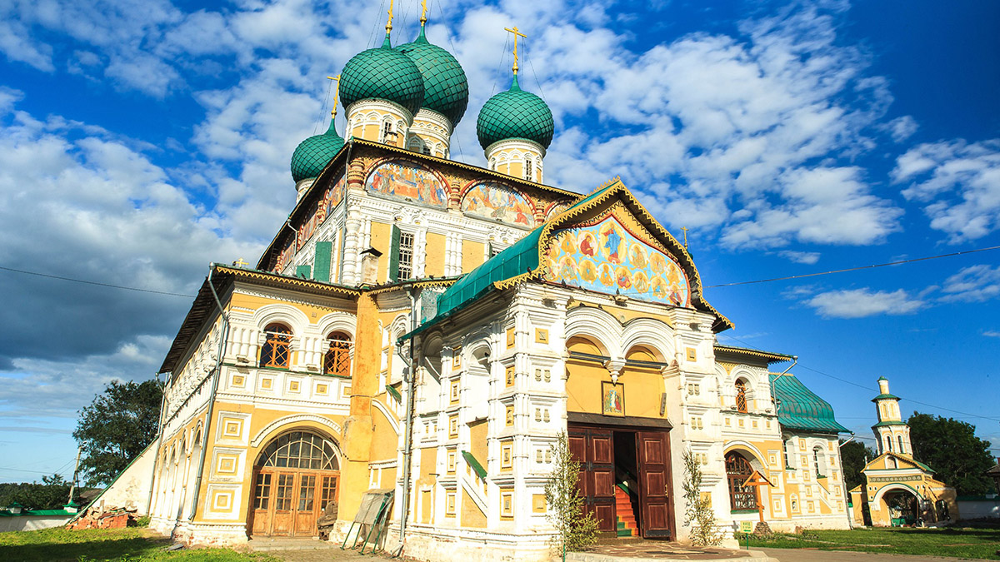
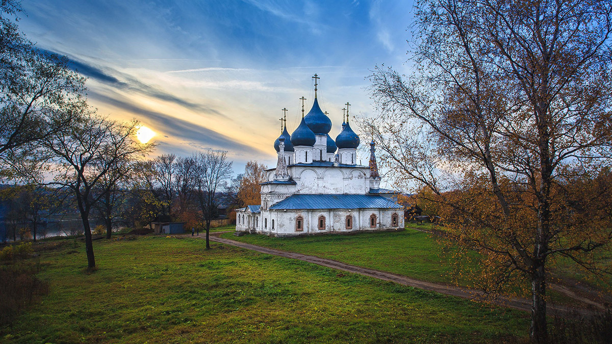

Воскресенский собор (1652-1678 гг.)

По праву считается архитектурным шедевром XVII века. По своим размерам Воскресенский собор превосходит все ярославские храмы. Занимает господствующее положение над городом и виден со всех сторон. В облике этого прекрасного произведения ярославского монументального искусства сочетается декоративная насыщенность внешнего и внутреннего убранства. Национальная гордость -это фрески Воскресенского собора, ознаменовавшие собой вершину ярославско-костромской иконографии. Воскресенский храм - настоящий музей древнерусской иконописи, резных предметов и скульптуры из дерева. В соборе находится огромная, почти трехметровая икона Всемилостливого Спаса Нерукотворного - духовная святыня города, с которой совершаются крестные ходы. Написана икона в первой четверти XV века преподобным Дионисием Глушицким. Чудотворному образу Спаса едут поклониться отовсюду.
Крестовоздвиженский собор (1652 г.)

Это самый старый каменный храм города. Он стоит на территории древнего городища, на месте более древнего деревянного собора, в котором молился Иван Грозный. Возведенный ярославскими мастерами, он является образцом местного зодчества середины XVII века. Стены Крестовоздвиженского собора расписаны талантливыми костромскими мастерами Василием Ильиным и Гурием Никитиным с товарищами. Собор поражает огромным четвериком главного помещения, мощными высокими барабанами, громадными куполами. Крепкая под стать собору шатровая колокольня примыкает к нему с северо-западного угла.
Казанская-Преображенская церковь (1758 г.)

Это визитная карточка города. Раньше она стояла выше, а теперь построена на гряде камней, где до этого стояла часовня, особенно почитаемая волгорями. Там, где стояла церковь, высится одна колокольня. Она напоминает маяк, отмечающий центр города. Под колокольней похоронен юродивый Онуфрий, живший в XVII веке и обладавший даром прорицателя. Церковь построена двухярусной. В теплой Казанской церкви находилась икона Казанской Божьей Матери, особо чтимая в Романове. В 1609 году она была вывезена в Ярославль, а в Романов отправлена ее точная копия. В комплекс храма входит две церкви, отсюда и двойное название храма. Нижняя церковь – теплая – Казанская, она находится в подклете здания. Вторым ярусом над ней поднимается храм Преображения Господня с открытой галереей и трапезной.
Храм в честь Покрова Пресвятой Богородицы (1674 г.)
Находится на месте упраздненного Новопокровского монастыря. Небольшая приземистая церковь с необычно толстыми стенами с одной главкой. Колокольня высокая и, пожалуй, самая красивая в городе. Ее шатровый верх со многими "слухами" украшен поливными изразцами зеленого цвета. В церкви сохранилась чрезвычайно редкая чудотворная икона Богородицы "Прибавление ума". По легенде ее написал душевнобольной человек в минуты просветления разума, когда он молился Богородице. Удивительная гармоничность городской застройки и окружающей природы делают привлекательными прогулки по тихим провинциальным улочкам Романова - Борисоглебска. Уютные двухэтажные дома в основном конца XIX начала XX веков до сих пор представляют собой подлинные городские ансамбли. Они построены по "образцовым проектам в стиле классицизма. Как неизменные атрибуты уездного города, сохранились здание присутственных мест, пожарная каланча 1912 года, гостиницы, трактиры и множество магазинов, расположенных вокруг главной торговой площади (ныне пл. Ленина).
Copyright © 2016 - All Rights Reserved - visittutaev.ru